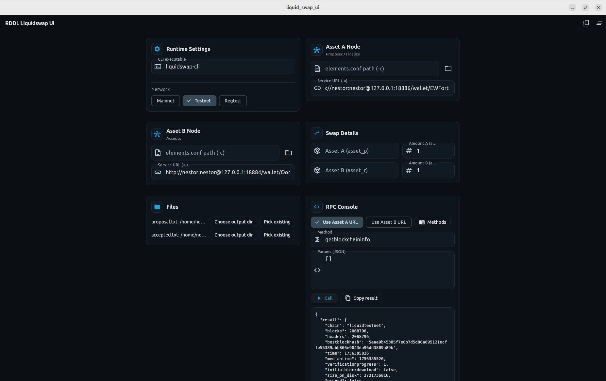

Turn real-world energy behavior into verified outcomes: lower bills, new revenue, and a calmer grid.
RDDL links households, SMEs, and microgrids to a Bitcoin-anchored settlement layer. We measure what happens in seconds, prove it cryptographically, and settle rewards fairly — for PV self-consumption, flexibility, and high-quality data.
Start in minutes — no electrician needed
Plug in an IKEA Dirigera*) hub plus one or more IKEA Inspelning*) meters or Zigbee smart wall plugs. Start with read-only insights; add sensors and control later for automation and rewards — no electrician required.
Grids need copper — and intelligence. RDDL makes the blind zone behind the smart meter visible in near real time and connects it to a Bitcoin-based, tokenized infrastructure. Cryptographically secured hardware and a role-based signaling system coordinate all parties so that technical performance translates into verifiable economic value.
Values are demo data illustrating live connectivity (MQTT/TLS, RBAC, Secure Elements).
The Idea
Tomorrow’s grid needs a data & intelligence layer. Second-level granularity ends the blindness behind the smart meter and makes flexibility, efficiency, and local generation measurable, controllable, and billable.
From “blind” to granular
We end the blindness behind the smart meter: instead of 15-minute intervals we deliver sub-10-second telemetry — buffered locally and forwarded securely.
Privacy & Compliance by design
Role-based data flows (RBAC), mTLS, and Secure Elements. Compliant with GDPR, NIS2, CRA, and energy-sector regulations.
Virtual grid expansion
More software, less copper: better forecasting, flex management, and dispatch help avoid costly physical grid investments.
Market enablement
Granular, signed measurements and flex signals enable fair settlement, peak shaving, demand response, and optimized market participation.
Microgrids & the Two-Layer System
The energy transition is won at medium and low voltage. RDDL connects transformer level, microgrids, and prosumers to close the information gap for operators, aggregators, and DSOs — turning flexibility into controllable, verifiable capacity.
Layer 1 — Consumption & Prosumer (Fleet layer)
Extends smart-meter capabilities in households & SMEs and links them to device-level metering and local intelligence.
Data capture
Energy Tracker (RISC-V): D0-IR, P1-HAN/Modbus, M-Bus — standard meter ports for reading data.
Smart plugs (Zigbee), net meter (1-/3-phase) — device-level usage and whole-home totals.
Sampling: sub-10s — updates multiple times per minute.
Transport & processing
Zigbee/Mioty → IoT hub → MQTT/TLS — local wireless into a secure message bus.
Dirigera2MQTT AP — reads the hub; SD card buffers data (≈129 GB) during outages.
Energy Agent — small edge computer for AI/ML and ~1 year history.
RBAC-governed signals — role-based controls decide who sees what (aggregator/operator/DSO).
Layer 2 — Microgrid & Facility (Site layer)
Orchestrates asset and grid level: dispatch, protection signals, remote control, and market integration.
Assets & control
PV/Wind/Hydro; BESS; EMS — controllable site assets.
WAGO PFC200 — controls active/reactive power (P/Q, cosφ) with smooth ramping.
WAGO PFC300 — central dispatcher & gateway for the site.
Grid & protocols
IEC-60870-5-104 — classic SCADA control, sent through a VPN.
IEC-61850 GOOSE — millisecond-fast protection messages on the local network.
Teltonika RUTX50 + Starlink — dual-WAN backhaul for resilience.
Both layers interact continuously, connecting behind-the-meter intelligence with grid-scale operations — enabling flexibility, demand response, peak shaving, and optimized market participation.
Token Mechanics (Proof-Backed Value)
Markets only pay what’s provable. RDDL follows a simple path: Measure events in seconds, Prove them with signed data, then Settle rewards and fees without exposing personal raw data.

RDDL Liquidswap UI — compact preview (click to zoom).
Signed measurements
Energy Tracker, Dirigera2MQTT AP, and Energy Agent contain Secure Elements. Measurement and flex signals are locally signed (mTLS/X.509, ECDSA) and versioned — trustworthy at the source.
RBAC topics & ACLs — broker permissions (who can publish/subscribe).
Privacy labels — behind-the-meter, aggregated, or anonymized views.
Secure time — PTP/NTP with integrity checks.
Verifiable claims
From signed raw data we derive verifiable claims (e.g., PV surplus, available flex, ramp compliance). Claims are portable and auditable, so programs can trust them.
Hash chaining — tamper-evident audit trails.
Timestamped aggregations — 1 s → 1 min roll-ups.
Exportable certificates — proofs you can share.
Settlement integration
Settlement and certification workflows can optionally reference public timechains (e.g., Merkle anchors) to prove integrity while keeping personal raw data off chain.
Off-chain data, on-chain anchors.
Audit-proof records for regulators and partners.
Compatible with existing market/DSO workflows.
Value Flows
Without reliable data, PV surplus and flexibility remain invisible. With provable value flows they become tradable goods, relieve grids, and open new revenue streams — from households to energy communities.
PV surplus → markets
Signed surplus becomes dependable, schedulable supply for aggregators and local markets.
Flex → dispatch
Advertised flex and observed ramps act as hard constraints for safe dispatch.
Certificates
Origin/performance proofs derived from signed chains — portable and auditable.
End-user incentives
Opt-in rewards for demand response and peak shaving — privacy first.
Use Cases
Use cases translate the intelligence layer into measurable impact — fewer peaks, higher self-consumption, grid-friendly ramps, and robust operations.
DR for SMEs
Shift cooling/heating/process loads within safe bounds to cut peaks and lower energy costs — without hurting comfort or quality.
Smart EV charging
Charge on PV surplus first, respect grid-friendly ramps, and use time windows via fleet→site coupling — higher self-consumption, less stress.
Home storage & peak shaving
Smart charge/discharge with dP/dt limits and zero-export when required — economic dispatch that stays grid-friendly.
Reserved for upcoming module — add image and specs.
Define Pilot
We provide the hardware blueprint (Energy Tracker, Dirigera2MQTT AP, optional Energy Agent), site setup (PFC200/PFC300, GOOSE, RUTX50+Starlink), and a secure data/dispatch pipeline.
Pilots create the data foundation for hard KPIs, reduce integration risk, and accelerate roll-outs in MV/LV grids.
• Success metrics — sub-10 s coverage, DR events executed, peak-shaving evidence.
10 prosumers (fleet) + 1 microgrid (site). Metering, dispatch tests, and a “dry-run” for market integration.
Outcome
Verifiable flex and surplus claims, ramp-compliance scoring, and an economic read-out (savings, rewards, payback signals).
FAQ
Clarity about roles, data ownership, and security is a prerequisite for broad acceptance — from households to grid operators.
What’s the difference between fleet layer and site layer?
The fleet layer lives behind the meter (measurement, analytics, local control). The site layer coordinates assets and grid interfaces (PFC200/PFC300, IEC-104, GOOSE). They’re loosely coupled via VPN/MQTT with RBAC.
What’s the minimal hardware?
Energy Tracker (smart-meter add-on), IKEA Dirigera, and Dirigera2MQTT AP (SD 129 GB). Optionally add an Energy Agent for AI/ML and local control. Site side: PFC200, PFC300, Teltonika switch, RUTX50 (+ Starlink).
Do raw data belong to the DSO?
No. DSOs get derived signals (e.g., flex windows, ΔP capability). Device-level raw data stay with the prosumer/operator under RBAC and explicit consent.
How is security ensured?
Defense in depth: mTLS (mutual TLS), hardware Secure Elements for keys & signatures, broker ACLs, VPN tunneling (IEC-104/MQTT), QoS controls, verified time (PTP/NTP), and full audit trails.
Get in Touch
Let’s schedule a short call and lock down the pilot scope in 30 minutes.
The shift to an intelligent grid won’t happen by itself. With your asset, neighborhood, or energy community we’ll take concrete steps — data-driven, secure, and economically sound.
This website is for informational purposes only and does not constitute investment, legal, tax, or other advice. Any references to tokens or tokenized incentives are conceptual and may be subject to regulatory approval and jurisdictional restrictions. All trademarks are the property of their respective owners.
Replace the bracketed placeholders above with your official registry, VAT/UID, and contact details once confirmed.
*) RDDL is an independent project and is neither affiliated with, associated with, authorized by, endorsed by, nor in any way officially connected with Inter IKEA Systems B.V. or any IKEA entity. References to IKEA, Dirigera, and Inspelning are for compatibility and identification only. All trademarks are the property of their respective owners